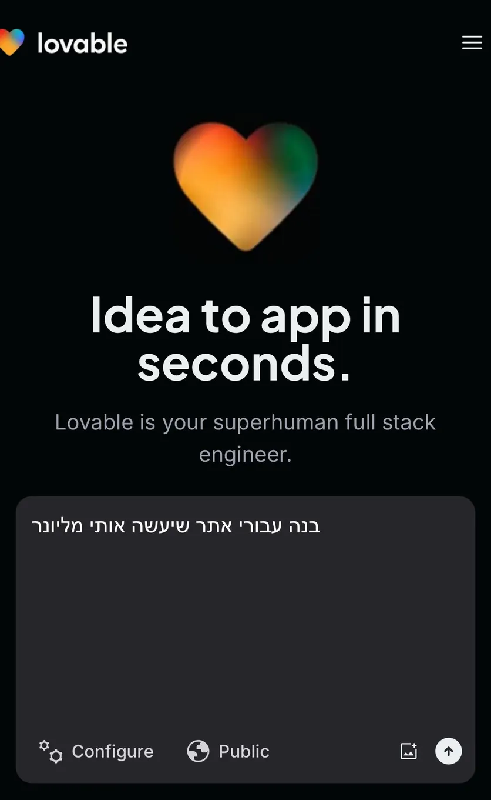

What people are building with Lovable
Originally posted on LinkedIn, December 13, 2024.
A single email blew my mind. Renamify automatically renames image files based on what appears in them. I loved the idea. It is original, simple, and useful.
But Renamify was not developed by a massive engineering team. It was built with Lovable, a new generative AI website builder. And it is only one of the strong ideas people have built on the platform.
Lovable's newsletter, which I received this week, shared a list of products for inspiration:
- Wiktok: a cross between TikTok and Wikipedia, with smart API integrations.
- Renamify: a tool that uses AI to rename files automatically.
- Emoji Riddles: a quick, fun emoji-based guessing game.
And more.
We have officially reached the point where AI does not just solve problems for us. It also creates useful tools and turns ideas that nobody has tackled yet into working products.
